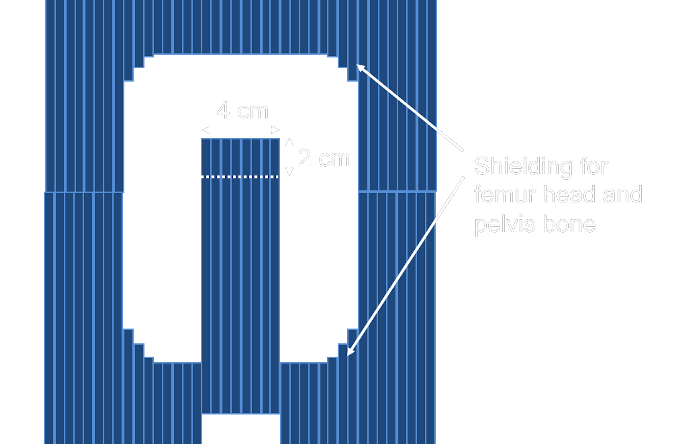
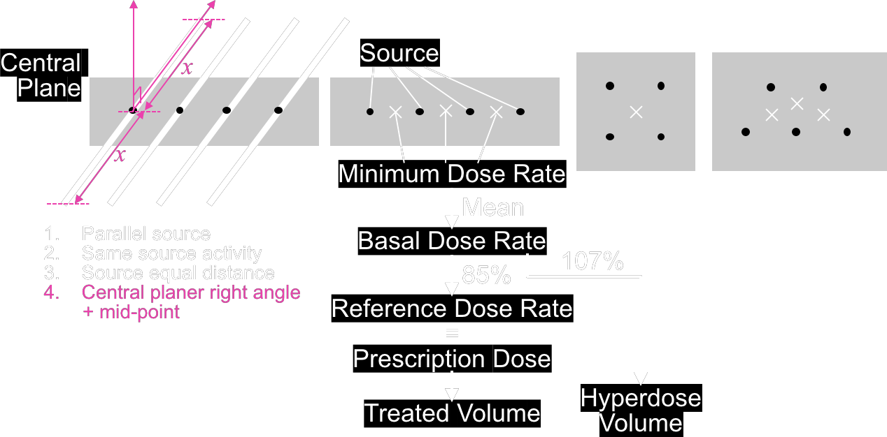

| Treatment |
+ External Beam
(WPI) Whole pelvis irradiation
OAR = femur head, pelvis bone
(API) Addition parametrium irradiation

Parametrial Boost (L/R)
|
|||||||||||||||||||||||||||||||||||||||||||||||||||||||||||||||||||||||||
| ICB for Ca Cervix |
|
|||||||||||||||||||||||||||||||||||||||||||||||||||||||||||||||||||||||||
| ICB for Ca Corpus |
To eliminate microscopic spread
|
|||||||||||||||||||||||||||||||||||||||||||||||||||||||||||||||||||||||||
| IGBT for Ca Cervix |
(refer to EMBRANCE II, in the future: III)
|
|||||||||||||||||||||||||||||||||||||||||||||||||||||||||||||||||||||||||
| Paris System |

|
|||||||||||||||||||||||||||||||||||||||||||||||||||||||||||||||||||||||||
| EMBRACE II |
= protocol for cervical cancer treatment
→ EBRT+ IGBT + Chemo
= MRI guided IGBT after EBRT Notes on EBRT/Chem
EBRT → ~ 40-50 Gy
|
|||||||||||||||||||||||||||||||||||||||||||||||||||||||||||||||||||||||||